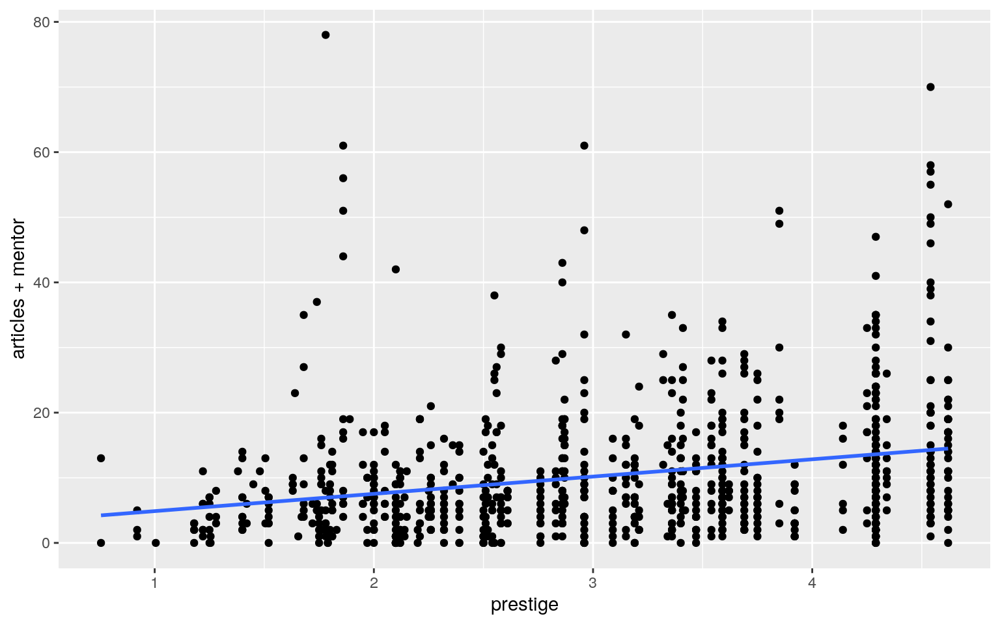

library(tidyverse)
library(AER)
phd <- data("PhDPublications")
summary(PhDPublications)## articles gender married kids prestige mentor
## Min. : 0.000 male :494 no :309 Min. :0.0000 Min.
:0.755 Min. : 0.000
## 1st Qu.: 0.000 female:421 yes:606 1st Qu.:0.0000 1st
Qu.:2.260 1st Qu.: 3.000
## Median : 1.000 Median :0.0000 Median :3.150 Median :
6.000
## Mean : 1.693 Mean :0.4951 Mean :3.103 Mean : 8.767
## 3rd Qu.: 2.000 3rd Qu.:1.0000 3rd Qu.:3.920 3rd
Qu.:12.000
## Max. :19.000 Max. :3.0000 Max. :4.620 Max. :77.000The data I selected is PhD publications. It has six variables and 915 observations. The variables are number of articles published during last 3 years of PhD (articles), gender, kids less than six years old (kids), married, prestige of the program (prestige) and number of articles published by students mentor (mentor).
man1 <- manova(cbind(articles,kids,mentor)~prestige,data = PhDPublications)
summary(man1)## Df Pillai approx F num Df den Df Pr(>F)
## prestige 1 0.069201 22.576 3 911 4.19e-14 ***
## Residuals 913
## ---
## Signif. codes: 0 '***' 0.001 '**' 0.01 '*' 0.05 '.' 0.1
' ' 1summary.aov(man1)## Response articles :
## Df Sum Sq Mean Sq F value Pr(>F)
## prestige 1 18.2 18.2371 4.9372 0.02653 *
## Residuals 913 3372.5 3.6938
## ---
## Signif. codes: 0 '***' 0.001 '**' 0.01 '*' 0.05 '.' 0.1
' ' 1
##
## Response kids :
## Df Sum Sq Mean Sq F value Pr(>F)
## prestige 1 0.38 0.37568 0.6419 0.4232
## Residuals 913 534.35 0.58527
##
## Response mentor :
## Df Sum Sq Mean Sq F value Pr(>F)
## prestige 1 5575 5575.1 66.42 1.195e-15 ***
## Residuals 913 76634 83.9
## ---
## Signif. codes: 0 '***' 0.001 '**' 0.01 '*' 0.05 '.' 0.1
' ' 1#pairwise.t.test(PhDPublications$kids,PhDPublications$prestige, p.adj = "none")
#pairwise.t.test(kids,prestige, p.adj = "none")
#pairwise.t.test(mentor,prestige, p.adj = "none")A manova test was performed to test if any of my numerical variables would show a mean different among levels on one of my categorical variables. The pvalue is 4.19e-14 which shows there is a mean different. I muted the post.t test because it didn’t print anything useful and it was long.
3. (40 pts) Build a linear regression model predicting one of your response variables from at least 2 other variables, including their interaction. Mean-center any numeric variables involved in the interaction.
ggplot() using geom_smooth(method=“lm”). If your interaction is numeric by numeric, refer to code in the slides to make the plot or check out the interactions package, which makes this easier. If you have 3 or more predictors, just chose two of them to plot for convenience. (10)coeftest(..., vcov=vcovHC(...)). Discuss significance of results, including any changes from before/after robust SEs if applicable. (10)library(tidyverse)
fit <- lm(prestige~articles+mentor,data = PhDPublications)
summary(fit)##
## Call:
## lm(formula = prestige ~ articles + mentor, data =
PhDPublications)
##
## Residuals:
## Min 1Q Median 3Q Max
## -3.1847 -0.7667 0.0594 0.7435 1.7675
##
## Coefficients:
## Estimate Std. Error t value Pr(>|t|)
## (Intercept) 2.870253 0.047154 60.870 < 2e-16 ***
## articles -0.003558 0.017160 -0.207 0.836
## mentor 0.027247 0.003485 7.819 1.47e-14 ***
## ---
## Signif. codes: 0 '***' 0.001 '**' 0.01 '*' 0.05 '.' 0.1
' ' 1
##
## Residual standard error: 0.9513 on 912 degrees of
freedom
## Multiple R-squared: 0.06786, Adjusted R-squared: 0.06582
## F-statistic: 33.2 on 2 and 912 DF, p-value: 1.212e-14coef(fit)## (Intercept) articles mentor
## 2.870252706 -0.003558465 0.027247047fit %>% ggplot(aes(prestige,articles+mentor))+geom_point()+geom_smooth(method = "lm",se = F)
coeftest(fit,vcov=vcovHC(fit))##
## t test of coefficients:
##
## Estimate Std. Error t value Pr(>|t|)
## (Intercept) 2.8702527 0.0536280 53.5215 < 2.2e-16 ***
## articles -0.0035585 0.0212531 -0.1674 0.8671
## mentor 0.0272470 0.0046008 5.9222 4.496e-09 ***
## ---
## Signif. codes: 0 '***' 0.001 '**' 0.01 '*' 0.05 '.' 0.1
' ' 1Our model line has a positive slope but we appear to have outliers. Graphically, it does not seem linearity, normality, and homoskedasticity are met. Our intercept means that on average univeristies have a prestige of 2.870253 while a PhD student has -0.003558 publications in the past three years while mentors have published 0.027247 publications. The model has a propotion of 0.06786 of the variation in the outcome. The SE seems to decrease.
5. (30 pts) Fit a logistic regression model predicting a binary variable (if you don’t have one, make/get one) from at least two explanatory variables (interaction not necessary).
class_diag <- function(probs,truth){
#CONFUSION MATRIX: CALCULATE ACCURACY, TPR, TNR, PPV
if(is.character(truth)==TRUE) truth<-as.factor(truth)
if(is.numeric(truth)==FALSE & is.logical(truth)==FALSE) truth<-as.numeric(truth)-1
tab<-table(factor(probs>.5,levels=c("FALSE","TRUE")),factor(truth, levels=c(0,1)))
acc=sum(diag(tab))/sum(tab)
sens=tab[2,2]/colSums(tab)[2]
spec=tab[1,1]/colSums(tab)[1]
ppv=tab[2,2]/rowSums(tab)[2]
#CALCULATE EXACT AUC
ord<-order(probs, decreasing=TRUE)
probs <- probs[ord]; truth <- truth[ord]
TPR=cumsum(truth)/max(1,sum(truth))
FPR=cumsum(!truth)/max(1,sum(!truth))
dup <-c(probs[-1]>=probs[-length(probs)], FALSE)
TPR <-c(0,TPR[!dup],1); FPR<-c(0,FPR[!dup],1)
n <- length(TPR)
auc <- sum( ((TPR[-1]+TPR[-n])/2) * (FPR[-1]-FPR[-n]))
data.frame(acc,sens,spec,ppv,auc)
}6. (25 pts) Perform a logistic regression predicting the same binary response variable from ALL of the rest of your variables (the more, the better!)
lambda.1se). Discuss which variables are retained. (5)